Локальный сервер на Windows#
В Windows отсутствут встроенный локальный сервер - придется скачать и настроить его.
Open Server#
Скачай Open Server
Open Server бесплатен. Его делают прекрасные люди для нас разработчиков - задонать им от 60р и скажи спасибо!
Жмот? Скачивай долго на низкой скорости.
Установка Open Server#
-
Запусти скачанный файл. Во время установки будь внимателен - выбирай пункты как ниже в инструкции. Если какой-то шаг в инструкции отсутствует - оставь все по умолчанию и переходи к следующему.
-
Выбери место для установки. Рекомендую оставить предложенный вариант: 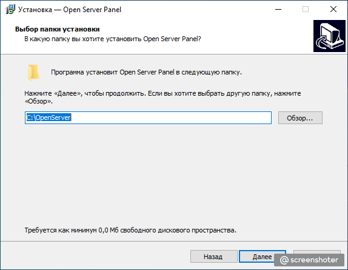
-
Выбери компактную установку: 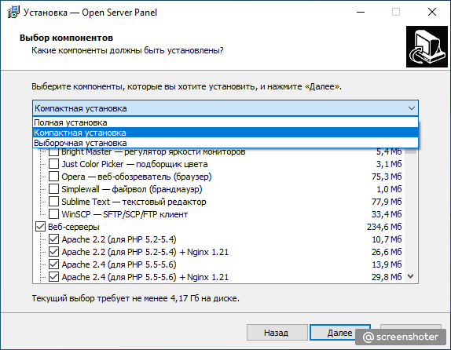
-
Скорее всего будет запущена установка дополнительных пакетов, необходимых для работы сервера. Она может занять некотрое время - терпеливо дождись окончания:
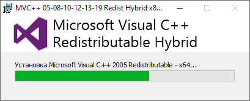 -
Предложат перезагрузить компьютер - перезагрузи.
Поздравляю - Open Server установлен.
Запуск Open Server#
- Перейди в папку, где установлен Open Server. Запусти единственный *.exe файл:
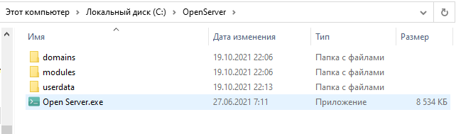 - Выбери подходящий язык
- В трее (внизу справа на панели со значками) найди красный флажок:
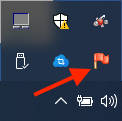 - Нажми на него - откроется меню Open Server. Выбери пункт - "Запустить":

- Брендмауер что-то там заблокирует. Не слушай его и разреши доступ:
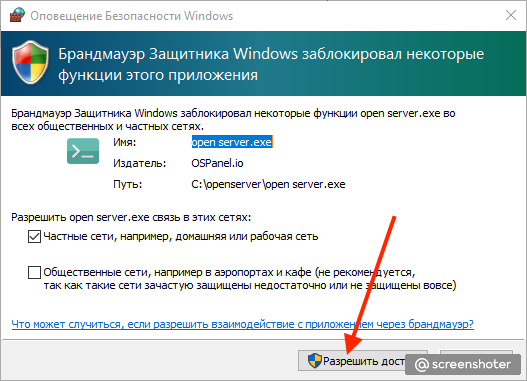 - В меню Open Server найди пункт - "Мои проекты". Выбери единственный вариант - "localhost":
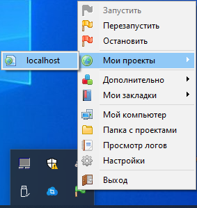 - Откроется вкладка браузера. Если в ней что-то подобное, то все отлично:
Open Server запускается и работает - съешь коврижку.
Включение модуля MySQL#
Нам нужна база данных MySQL. Нужно ее включить в настройках сервера, подключив соответствующий модуль:
- Зайди в настройки Open Server:
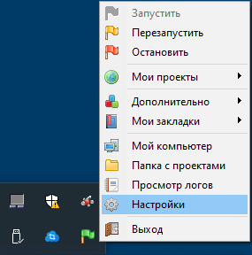 - В открывшемся окне выбери вкладку "Модули". В пункте MySQL выбери версию 5.7
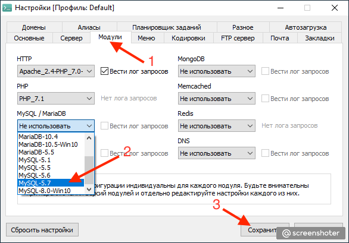 - Сохрани изменения. Программа скорее всего скажет, что перезапустит сервер - дай ей это сделать.
- Проверь, что модуль подключился. Иди в пункт "Дополнительно". В нем увидишь подпункт PhpMyAdmin:
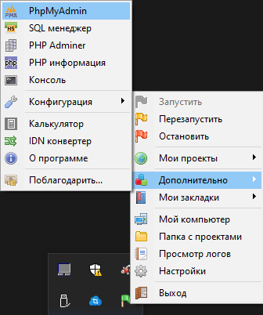 - Запусти его - откроется вкладка браузера. Введи имя пользователя - "root". Пароль оставь пустым и "Вперед":
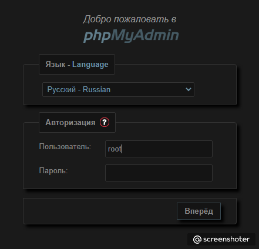 - Если видишь очень похожее на это - модуль MySQL корректно подключен:
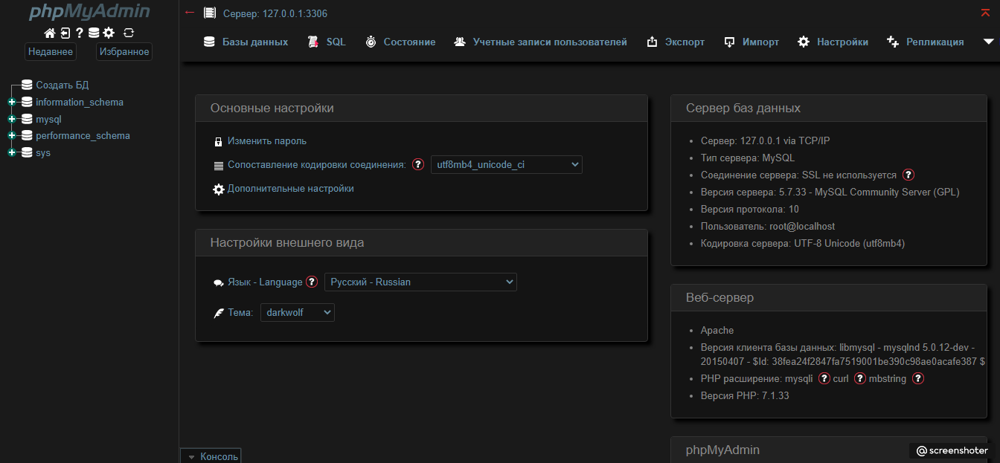
Тобой скачан, установлен, настроен и запущен OpenServer - заточи бублик!